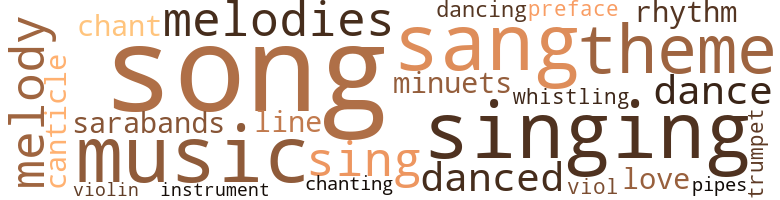
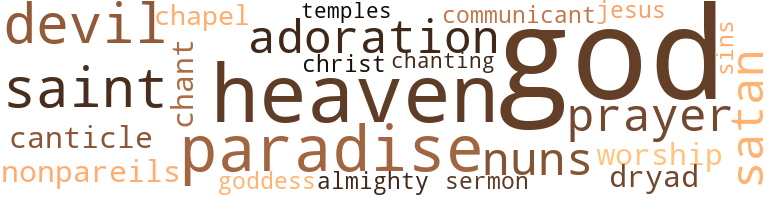

Madame Margot: A Grotesque Legend of Old Charleston, by Bennett, John (1921)
53 music-related terms matched in this text.
Most frequent terms in this topic: song (7); songs (4); sang (4); music (4); singing (4)
canticle.n.01
Definition: a hymn derived from the Bible
| word | sentence |
|---|---|
| canticle | In the fragrant green-bay the painted bunting 's love-call rang incessantly ; while from the tufted grove arose the stirring chant of earth 's universal choir , the canticle , all passionate and shrill , of " Love , love , love ! " and yet again of " Love ! " |
chant.n.01
Definition: a repetitive song in which as many syllables as necessary are assigned to a single tone
| word | sentence |
|---|---|
| chant | In the fragrant green-bay the painted bunting 's love-call rang incessantly ; while from the tufted grove arose the stirring chant of earth 's universal choir , the canticle , all passionate and shrill , of " Love , love , love ! " and yet again of " Love ! " |
cornet.n.01
Definition: a brass musical instrument with a brilliant tone; has a narrow tube and a flared bell and is played by means of valves
| word | sentence |
|---|---|
| trumpet | The wind from the graveyard whispered among the saffron curtains ; the ceaseless foun - tain waters fell ; else all was still but the peacock 's wild night-cry , sounding through the unfathomable silence like the rending of an illusion , - deep and singular and strange , - by a harsh trumpet 's blast . |
dance.n.01
Definition: an artistic form of nonverbal communication
| word | sentence |
|---|---|
| dances | But the fairest thing reflected there was Gabrielle , dancing on the old stones which paved the court , - dances fantastic as her mood ; sarabands to the stately rhythm of odd old songs , deliberately slow ; canzons whose pathos was lost in a pirouette ; minuets which mimicked the swallows overhead with their swift glissades among the trees and undulating sweeps among the flowers , - snatching the poppies as she passed , and thrusting them in her hair , and pausing at last like a wind-blown flower above her reflection in the pool , - Gabrielle , singing old songs by the world forgotten , - strains of wild beauty , that by wayward loveliness have a peculiar power to please , with old melodies , alluring and sweet ; songs such as long ago stole the souls of saints determined upon salvation , and gave themes for many troubadour lays , of which , though all are lovely , the greater part are sad , being memories of loveliness departed into the dust : one of life 's paradoxes , that the memory of beauty should be bitter . |
| dance | The pigeons dozed along the eaves ; and on the grass below , where the garden stretched , the peacock slowly danced his stiff and stately dance , an iris feather bubble , green as jade , purple as wine , blue as lazuli . |
dance.v.02
Definition: move in a pattern; usually to musical accompaniment; do or perform a dance
| word | sentence |
|---|---|
| dancing | The earth loved the tread of their flying feet , which seemed to be forever dancing pastourelles ; and the narrow lanes of the city laughed with the lilt of their Creole tongue . |
dance.v.03
Definition: skip, leap, or move up and down or sideways
| word | sentence |
|---|---|
| danced | Her waist was as a willow-withe , her voice a bird in the deep wood calling ; her feet danced fantasies in his heart . |
| danced | The pigeons dozed along the eaves ; and on the grass below , where the garden stretched , the peacock slowly danced his stiff and stately dance , an iris feather bubble , green as jade , purple as wine , blue as lazuli . |
foreword.n.01
Definition: a short introductory essay preceding the text of a book
| word | sentence |
|---|---|
| preface | The flight of hours , the decline of day , the season 's turn , all things which preface change are presages of parting , and , like the proximity of the tomb , though wreathed in bloomy myrtle , are subtly fraught with sadness and regret . |
love_song.n.01
Definition: a song about love or expressing love for another person
| word | sentence |
|---|---|
| Love-songs | " Love-songs are sweet to a lover , as folly is dear to a fool . |
melody.n.02
Definition: the perception of pleasant arrangements of musical notes
| word | sentence |
|---|---|
| melody | Spring , with its universal song , from grove and garden lifted up its deathless melody of bloomy verdure and warm-breathed sweetness . |
minuet.n.01
Definition: a stately court dance in the 17th century
| word | sentence |
|---|---|
| minuets | But the fairest thing reflected there was Gabrielle , dancing on the old stones which paved the court , - dances fantastic as her mood ; sarabands to the stately rhythm of odd old songs , deliberately slow ; canzons whose pathos was lost in a pirouette ; minuets which mimicked the swallows overhead with their swift glissades among the trees and undulating sweeps among the flowers , - snatching the poppies as she passed , and thrusting them in her hair , and pausing at last like a wind-blown flower above her reflection in the pool , - Gabrielle , singing old songs by the world forgotten , - strains of wild beauty , that by wayward loveliness have a peculiar power to please , with old melodies , alluring and sweet ; songs such as long ago stole the souls of saints determined upon salvation , and gave themes for many troubadour lays , of which , though all are lovely , the greater part are sad , being memories of loveliness departed into the dust : one of life 's paradoxes , that the memory of beauty should be bitter . |
music.n.01
Definition: an artistic form of auditory communication incorporating instrumental or vocal tones in a structured and continuous manner
| word | sentence |
|---|---|
| music | " Mother , " she said wistfully , " what is it fills the world with music day and night ? |
| music | Her flute-like voice was like the music of a half-awakened song , and exquisitely moving ; her words trailed slowly like speech asleep . |
| music | The wind screamed round about her with the sound of many voices ; far off arose a tumult as of many people running ; borne on the wind came a torrent of hideous sound , not mad music , but awful dissonance , swiftly nearing , suddenly checked : after the clamor a silence like death ; the room was fantastically still . |
| music | God , who knows everything , knows whence she had her exquisite , slender body , her aristocratic face , the dusky crimson tide , the touch of fantasy which made her lovely as a strain of wild , passionate music played on the deep strings of a gipsy violin . |
musical_instrument.n.01
Definition: any of various devices or contrivances that can be used to produce musical tones or sounds
| word | sentence |
|---|---|
| instrument | Margot died in a dirty hovel in an unkempt alleyway , in the midst of a negro quarter , where , if one beat a drum or caused an instrument of an orchestra to sound , the people swarmed from the tenements like ants out of a hill . |
pipe.n.04
Definition: a tubular wind instrument
| word | sentence |
|---|---|
| pipes | The great house stood a ruin above a ruined court , a wreck of its former pride and splendor , black and foul ; the fountain had fallen long ago , its pipes strangled and eaten away to crusts of lead and thready ribs of iron in the sand . |
rhythm.n.04
Definition: the arrangement of spoken words alternating stressed and unstressed elements
| word | sentence |
|---|---|
| rhythm | But the fairest thing reflected there was Gabrielle , dancing on the old stones which paved the court , - dances fantastic as her mood ; sarabands to the stately rhythm of odd old songs , deliberately slow ; canzons whose pathos was lost in a pirouette ; minuets which mimicked the swallows overhead with their swift glissades among the trees and undulating sweeps among the flowers , - snatching the poppies as she passed , and thrusting them in her hair , and pausing at last like a wind-blown flower above her reflection in the pool , - Gabrielle , singing old songs by the world forgotten , - strains of wild beauty , that by wayward loveliness have a peculiar power to please , with old melodies , alluring and sweet ; songs such as long ago stole the souls of saints determined upon salvation , and gave themes for many troubadour lays , of which , though all are lovely , the greater part are sad , being memories of loveliness departed into the dust : one of life 's paradoxes , that the memory of beauty should be bitter . |
saraband.n.01
Definition: music composed for dancing the saraband
| word | sentence |
|---|---|
| sarabands | But the fairest thing reflected there was Gabrielle , dancing on the old stones which paved the court , - dances fantastic as her mood ; sarabands to the stately rhythm of odd old songs , deliberately slow ; canzons whose pathos was lost in a pirouette ; minuets which mimicked the swallows overhead with their swift glissades among the trees and undulating sweeps among the flowers , - snatching the poppies as she passed , and thrusting them in her hair , and pausing at last like a wind-blown flower above her reflection in the pool , - Gabrielle , singing old songs by the world forgotten , - strains of wild beauty , that by wayward loveliness have a peculiar power to please , with old melodies , alluring and sweet ; songs such as long ago stole the souls of saints determined upon salvation , and gave themes for many troubadour lays , of which , though all are lovely , the greater part are sad , being memories of loveliness departed into the dust : one of life 's paradoxes , that the memory of beauty should be bitter . |
sing.v.02
Definition: produce tones with the voice
| word | sentence |
|---|---|
| sang | In the gardens rare flowers bloomed , and rare fruits ripened , - pomegranates , oranges , medlars , figs , jujubes , and the purple Indian peach ; and among the flowers , like winged flames , small and bright , sped the harlequins , the painted nonpareils , delicately beating the soft wind with their pied wings ; while in the pomegranate-tree , among the dull bronze fruit , the mocking-bird sang his love and rapture . |
| sang | Thrush and mocker sang , " Passion , passion . . . heart-breaking passion ! " to their pretty feathered paramours . |
| sing | What is it makes the whole world sing ? " |
| sings | " And what is this love of which every one sings - we women most of all ? " |
| singing | Two who loved each other might walk together , hand in hand , along the path , singing their happiness , without reproach , save , perchance , from some lugubrious , gray-bearded presbyter mourning , among mossy tombstones , life 's evanescence . |
| sang | For , when she perceived that look in his face , she , too , was thrilled with longing ; the silence sang ; fire thrilled her heart ; suddenly neck and cheeks flamed red . |
| sang | At every breath there came and went beneath her transparent skin a shadowy crimson under-dusk , ebbing and flowing with the beat of her heart like a somber , twilit tide , - San Domingo 's sang de crepuscule ; and through her fingers the sunlight shone with a golden radiance like the glow of a rose through a glass of madeira . |
singing.n.01
Definition: the act of singing vocal music
| word | sentence |
|---|---|
| singing | But the fairest thing reflected there was Gabrielle , dancing on the old stones which paved the court , - dances fantastic as her mood ; sarabands to the stately rhythm of odd old songs , deliberately slow ; canzons whose pathos was lost in a pirouette ; minuets which mimicked the swallows overhead with their swift glissades among the trees and undulating sweeps among the flowers , - snatching the poppies as she passed , and thrusting them in her hair , and pausing at last like a wind-blown flower above her reflection in the pool , - Gabrielle , singing old songs by the world forgotten , - strains of wild beauty , that by wayward loveliness have a peculiar power to please , with old melodies , alluring and sweet ; songs such as long ago stole the souls of saints determined upon salvation , and gave themes for many troubadour lays , of which , though all are lovely , the greater part are sad , being memories of loveliness departed into the dust : one of life 's paradoxes , that the memory of beauty should be bitter . |
| singing | The world was full of the sound of sweet , flute-like voices of young women calling after their lovers ; and the singing of small birds made slender , pleas - ant melodies among the cool myrtles . |
| singing | And when he was gone the garden to Gabrielle was emptied of delight ; but all her soul was singing . |
song.n.01
Definition: a short musical composition with words
| word | sentence |
|---|---|
| songs | But the fairest thing reflected there was Gabrielle , dancing on the old stones which paved the court , - dances fantastic as her mood ; sarabands to the stately rhythm of odd old songs , deliberately slow ; canzons whose pathos was lost in a pirouette ; minuets which mimicked the swallows overhead with their swift glissades among the trees and undulating sweeps among the flowers , - snatching the poppies as she passed , and thrusting them in her hair , and pausing at last like a wind-blown flower above her reflection in the pool , - Gabrielle , singing old songs by the world forgotten , - strains of wild beauty , that by wayward loveliness have a peculiar power to please , with old melodies , alluring and sweet ; songs such as long ago stole the souls of saints determined upon salvation , and gave themes for many troubadour lays , of which , though all are lovely , the greater part are sad , being memories of loveliness departed into the dust : one of life 's paradoxes , that the memory of beauty should be bitter . |
| songs | But the fairest thing reflected there was Gabrielle , dancing on the old stones which paved the court , - dances fantastic as her mood ; sarabands to the stately rhythm of odd old songs , deliberately slow ; canzons whose pathos was lost in a pirouette ; minuets which mimicked the swallows overhead with their swift glissades among the trees and undulating sweeps among the flowers , - snatching the poppies as she passed , and thrusting them in her hair , and pausing at last like a wind-blown flower above her reflection in the pool , - Gabrielle , singing old songs by the world forgotten , - strains of wild beauty , that by wayward loveliness have a peculiar power to please , with old melodies , alluring and sweet ; songs such as long ago stole the souls of saints determined upon salvation , and gave themes for many troubadour lays , of which , though all are lovely , the greater part are sad , being memories of loveliness departed into the dust : one of life 's paradoxes , that the memory of beauty should be bitter . |
| songs | But the fairest thing reflected there was Gabrielle , dancing on the old stones which paved the court , - dances fantastic as her mood ; sarabands to the stately rhythm of odd old songs , deliberately slow ; canzons whose pathos was lost in a pirouette ; minuets which mimicked the swallows overhead with their swift glissades among the trees and undulating sweeps among the flowers , - snatching the poppies as she passed , and thrusting them in her hair , and pausing at last like a wind-blown flower above her reflection in the pool , - Gabrielle , singing old songs by the world forgotten , - strains of wild beauty , that by wayward loveliness have a peculiar power to please , with old melodies , alluring and sweet ; songs such as long ago stole the souls of saints determined upon salvation , and gave themes for many troubadour lays , of which , though all are lovely , the greater part are sad , being memories of loveliness departed into the dust : one of life 's paradoxes , that the memory of beauty should be bitter . |
| song | She sighed wistfully ; her song ceased ; her mouth showed scarcely a smile 's wasted ghost . |
| song | Spring , with its universal song , from grove and garden lifted up its deathless melody of bloomy verdure and warm-breathed sweetness . |
| song | " But , " replied Gabrielle , wondering , " if love be the source of all wretchedness , why is its song so sweet ? " |
| song | Her flute-like voice was like the music of a half-awakened song , and exquisitely moving ; her words trailed slowly like speech asleep . |
| song | Her breath was still upon his face , the smell of the flowers in his nostrils ; and in his ears was the sound of her voice , calling after him , low and sweet , like a half-awakened song , - or was it but a bird which called , that softly-fluting , lonely note . |
| song | The strange , white light of the immense full moon lay dead on everything ; the hedge-rows were hung with the shadows and darkness of strange delight ; the cicada chit-tered in the almond tree ; the great moths flapped heavily among the wet moon-flowers ; a slow , scarcely perceptible wind blew , languid-sweet , hardly moving the heavy leaves of the magnolias ; a gray bird pitched a wild song somewhere deep within a hedge . |
| songs | Her bonnets were like songs in forced falsetto , every line slurred by subtle default , every sweet note out ; always too much or too little , never the happy mean . |
| Song | More than one sermon from Solomon 's Song was inspired by Rita Lagoux ; she was known as the woman with a face like a beautiful blasphemy . |
| song | Margot was like the summer sun , dazzling , opulent , sumptuous ; Gabrielle like the young spring moon in her slender loveliness ; the lines of her flowed one into the other like the lines of a song . |
theme.n.03
Definition: (music) melodic subject of a musical composition
| word | sentence |
|---|---|
| themes | But the fairest thing reflected there was Gabrielle , dancing on the old stones which paved the court , - dances fantastic as her mood ; sarabands to the stately rhythm of odd old songs , deliberately slow ; canzons whose pathos was lost in a pirouette ; minuets which mimicked the swallows overhead with their swift glissades among the trees and undulating sweeps among the flowers , - snatching the poppies as she passed , and thrusting them in her hair , and pausing at last like a wind-blown flower above her reflection in the pool , - Gabrielle , singing old songs by the world forgotten , - strains of wild beauty , that by wayward loveliness have a peculiar power to please , with old melodies , alluring and sweet ; songs such as long ago stole the souls of saints determined upon salvation , and gave themes for many troubadour lays , of which , though all are lovely , the greater part are sad , being memories of loveliness departed into the dust : one of life 's paradoxes , that the memory of beauty should be bitter . |
| theme | All living creatures voiced the universal theme : " Rejoice with the partner of thine heart in the happy days of thy youth ! " |
| theme | As she stood thus , brooding on life 's inexplicable theme , she was aware of a sudden shadow which fell on the grass beside her , and turned in voiceless terror . |
tone.v.01
Definition: utter monotonously and repetitively and rhythmically
| word | sentence |
|---|---|
| chanting | No apparition came by night , no terror by day ; so quiet it was , so full of peace , it seemed a sanctuary withdrawn from the interrupting clash and rude alarms of the troubled world , - its tranquillity that of a convent close , with little , distant , ringing bells , recurrent chimes and subdued voices , muffled by distance , as of nuns chanting an office in the peaceful choir of a green-nooked nunnery . |
tune.n.01
Definition: a succession of notes forming a distinctive sequence
| word | sentence |
|---|---|
| melodies | But the fairest thing reflected there was Gabrielle , dancing on the old stones which paved the court , - dances fantastic as her mood ; sarabands to the stately rhythm of odd old songs , deliberately slow ; canzons whose pathos was lost in a pirouette ; minuets which mimicked the swallows overhead with their swift glissades among the trees and undulating sweeps among the flowers , - snatching the poppies as she passed , and thrusting them in her hair , and pausing at last like a wind-blown flower above her reflection in the pool , - Gabrielle , singing old songs by the world forgotten , - strains of wild beauty , that by wayward loveliness have a peculiar power to please , with old melodies , alluring and sweet ; songs such as long ago stole the souls of saints determined upon salvation , and gave themes for many troubadour lays , of which , though all are lovely , the greater part are sad , being memories of loveliness departed into the dust : one of life 's paradoxes , that the memory of beauty should be bitter . |
| melody | From every spray the vireo cried shrill , in shreds of melody , " Heart 's desire ! |
| melodies | The world was full of the sound of sweet , flute-like voices of young women calling after their lovers ; and the singing of small birds made slender , pleas - ant melodies among the cool myrtles . |
| line | With her head poised like a flower ; her little , perfect hands and feet ; her ankles slim and beautiful ; each line aristocratic ; everything proclaiming patrician blood ; nothing asserting a baser thing ; saint , maid , dryad , nymph , or sprite , who could tell which ? |
viol.n.01
Definition: any of a family of bowed stringed instruments that preceded the violin family
| word | sentence |
|---|---|
| viol | Deep within the house he heard a relaxed beam " pung " with a sound like a viol string softly struck by a hand in passing : the deep , slow sound reverberated through the hollow house , and died away in vacant whispering . |
violin.n.01
Definition: bowed stringed instrument that is the highest member of the violin family; this instrument has four strings and a hollow body and an unfretted fingerboard and is played with a bow
| word | sentence |
|---|---|
| violin | God , who knows everything , knows whence she had her exquisite , slender body , her aristocratic face , the dusky crimson tide , the touch of fantasy which made her lovely as a strain of wild , passionate music played on the deep strings of a gipsy violin . |
whistle.v.01
Definition: make whistling sounds
| word | sentence |
|---|---|
| whistling | Margot cowered as if to avoid a blow ; her eyes dilated ; yet she seemed incapable of seeing ; her mouth fell open , she seemed to scream , yet made no sound but that of the whistling breath through her nostrils , as one who sustains the torture of the rack . |
19 violence-related terms matched in this text.
Most frequent terms in this topic: scorn (3); choked (2); bitterness (2); resist (1); hated (1)
contemn.v.01
Definition: look down on with disdain
| word | sentence |
|---|---|
| scorn | Ever before her imagining was Gabri-elle , dishonored and betrayed , abandoned to scorn and poverty . |
| scorn | Its face was greatly wasted ; all the life of it seemed gathered into the brilliant , terrible eyes , which blazed with infernal light , in splendid scorn , without remorse , sardonical ; a coun - tenance such as God alone endures to look upon unmoved ; a figure terrible . . . Deity , deformed , might look like this , grotesquely majestical , hideous , baleful , glorious , accursed , malign ; an archangel , fallen , outcast , depraved : Satan , god of the discontent . |
| scorn | It is a perilous privilege for a girl to possess loveliness rising above her station in life ; there is a price always to be paid for it , sorrow the common fee ; such a heritage of beauty often proves but a legacy of shame , - a beauty built for destruction , a loveliness for scorn ; haggard wisdom reaps in tears what innocence sowed with laughter . |
crucify.v.01
Definition: kill by nailing onto a cross
| word | sentence |
|---|---|
| crucified | The walls were blotched and spotted ; everything ex - haled an odor of mildew ; Margot still huddled upon the floor beneath the crucifix ; over her head the crucified Christ hung mute in His agony . |
destroy.v.04
Definition: put (an animal) to death
| word | sentence |
|---|---|
| destroy | " When you are dead and done for , and lie sleeping in the dust ; when • worms destroy your body , when your days upon earth are become as shadows , and you have no more a portion forever in anything under the sun , what shall it profit you to have saved your soul at the cost of your heart 's desire ? |
envy.n.01
Definition: a feeling of grudging admiration and desire to have something that is possessed by another
| word | sentence |
|---|---|
| envy | Her body was cast in a glorious mould : she was tall ; in figure perfect , and full of a stately , tiger-like grace , the envy of other women . |
gag.v.06
Definition: cause to retch or choke
| word | sentence |
|---|---|
| choked | Gabrielle was intoxicated with the passion of her own heart , without an object or an aim ; her throat was almost choked with youth 's sweet , innocent desire ; and , ever , within her shaking heart , the questioning wonder grew . |
| choked | She strained her daughter to her heart , then thrust her away ; dropped speech unuttered ; gave a choked cry of despair , while her face went gray as ashes . |
harm.v.01
Definition: cause or do harm to
| word | sentence |
|---|---|
| harmed | " I have never harmed any man , nor any living thing . " |
hate.v.01
Definition: dislike intensely; feel antipathy or aversion towards
| word | sentence |
|---|---|
| hate | Cloistral life is very well for souls of cloistral nature and of the convent sort ; but youth and spring hate convents , and will have life 's novitiate , or none . |
| hated | She hated a priest , and never knelt at a confessional again . |
malice.n.01
Definition: feeling a need to see others suffer
| word | sentence |
|---|---|
| Malice | Malice laughed at her thickening lips . |
pain.v.02
Definition: cause emotional anguish or make miserable
| word | sentence |
|---|---|
| hurt | Why does spring hurt me so ? " |
resentment.n.01
Definition: a feeling of deep and bitter anger and ill-will
| word | sentence |
|---|---|
| bitterness | Margot 's delight in her daughter 's beauty was turned into bitterness . |
| bitterness | She was seeking her daughter 's safety , though it should be at the hazard of her soul ; but all she had was the bitterness of unanswered supplication . |
resist.v.04
Definition: withstand the force of something
| word | sentence |
|---|---|
| resist | It is hard for woman to stand alone and to resist temptation forever . |
strangle.v.01
Definition: kill by squeezing the throat of so as to cut off the air
| word | sentence |
|---|---|
| strangled | The great house stood a ruin above a ruined court , a wreck of its former pride and splendor , black and foul ; the fountain had fallen long ago , its pipes strangled and eaten away to crusts of lead and thready ribs of iron in the sand . |
torment.v.01
Definition: torment emotionally or mentally
| word | sentence |
|---|---|
| torture | Margot cowered as if to avoid a blow ; her eyes dilated ; yet she seemed incapable of seeing ; her mouth fell open , she seemed to scream , yet made no sound but that of the whistling breath through her nostrils , as one who sustains the torture of the rack . |
weather.v.01
Definition: face and withstand with courage
| word | sentence |
|---|---|
| brave | The languid , lovely , tired old town was then a city brave and gay , with Mediterranean manners and Caribbean ways . |
69 religion-related terms matched in this text.
Most frequent terms in this topic: God (21); god (8); Paradise (3); Devil (3); heaven (3)
canticle.n.01
Definition: a hymn derived from the Bible
| word | sentence |
|---|---|
| canticle | In the fragrant green-bay the painted bunting 's love-call rang incessantly ; while from the tufted grove arose the stirring chant of earth 's universal choir , the canticle , all passionate and shrill , of " Love , love , love ! " and yet again of " Love ! " |
chant.n.01
Definition: a repetitive song in which as many syllables as necessary are assigned to a single tone
| word | sentence |
|---|---|
| chant | In the fragrant green-bay the painted bunting 's love-call rang incessantly ; while from the tufted grove arose the stirring chant of earth 's universal choir , the canticle , all passionate and shrill , of " Love , love , love ! " and yet again of " Love ! " |
chapel.n.01
Definition: a place of worship that has its own altar
| word | sentence |
|---|---|
| chapel | Her beauty startled him : delicate-frail , almost translucent in the golden sun , she seemed a being not of flesh and gross mortality , but a spirit by enchantment made visible , a dryad out of the ancient wood , a maiden saint stepped out of a missal or fled from a chapel window , with a halo around her brow . |
communicant.n.01
Definition: a person entitled to receive Communion
| word | sentence |
|---|---|
| communicant | Here lay the long dead , day and night , communicant in death ; and wraiths of old unhappiness rose sighing with regret , or dreamed , beneath the stones , of love as futile as regret . |
dryad.n.01
Definition: a deity or nymph of the woods
| word | sentence |
|---|---|
| dryad | Her beauty startled him : delicate-frail , almost translucent in the golden sun , she seemed a being not of flesh and gross mortality , but a spirit by enchantment made visible , a dryad out of the ancient wood , a maiden saint stepped out of a missal or fled from a chapel window , with a halo around her brow . |
eden.n.01
Definition: any place of complete bliss and delight and peace
| word | sentence |
|---|---|
| Paradise | Unspoiled by knowledge , unruined by folly , too innocent to be perplexed by life 's anxieties , her soul mistook Earth for the pathway to Paradise , and nothing as yet had discovered her error . |
| paradise | The calendar seemed to have paused among the daffodils , between the jessamine and the June , in that paradise of the year . |
| Heaven | Heaven 's custodian mingled their prayers in fatal entanglement ; one was answered , and one was not : he is responsible . |
| heaven | Overhead the blue dome blazed with the innumerable stars and golden planets heaving up heaven 's arch ; the tremulous green lamps of the fireflies filled the earth with twinkling constellations all around them . |
| heavens | But the heavens and the earth were as nothing to them : love was there , and he , and she , and the utterly forgotten starlight . |
| Paradise | You see her young and fair , her soul as pure as the flowers that bloom in Paradise ! |
| heaven | She moved , when she walked , as an empress might if heaven but gave her grace , with an exquisite , perfect motion , devoid of every appearance of effort , - not striding , but seeming to glide like a swan swimming on untroubled water . |
| Heaven | A tremendous gust blew through the house ; the wind sucked in the chimney with a sound like awful laughter ; the blinds recoiled with thunderous shock ; but from Heaven there was no answer . |
| Heaven | Heaven maintained its brassy silence . |
| heaven | " If this be loving-kindness , why not try damnation awhile ; not forfeit riches , power , and place , for a fool 's hope of treasures in heaven ? |
| Paradise | Far and away beyond compare she was the loveliest girl in St. Finbar 's parish ; and the faces of the young girls in St. Finbar 's made that ancient , dim , gray parish bloom like the gardens of Paradise . |
god.n.03
Definition: a man of such superior qualities that he seems like a deity to other people
| word | sentence |
|---|---|
| God | " You told me that God is love ! " |
| God | Is not what God made good . . . you told me that God was love . . . was not mankind made by God . . . and is not love the world 's delight ? " |
| God | Is not what God made good . . . you told me that God was love . . . was not mankind made by God . . . and is not love the world 's delight ? " |
| God | Is not what God made good . . . you told me that God was love . . . was not mankind made by God . . . and is not love the world 's delight ? " |
| God | " I conjure you , by God 's sorrow , close your ears against it . " |
| God | Could God set so foul a seal upon so fair a thing ? |
| god | Was it a god or a man in the hedge ? |
| god | How could she tell if it were a god or a man , - that face with its shimmering locks like living fire around it , a gleaming nimbus whose dancing flames were fash - ioned of burnished gold , a face like a blazing seraph 's , or Ariel 's ? |
| god | " You are the god of love , " she said , with infinite simplicity . |
| god | " The god of love ? |
| god | It was in an hour of inspiration the indolent god of beauty drew the lines on which her body was built . |
| God | Into the house she came , one little slipper upon its little foot , one slipper gone , - what became of that lost little slipper God knows ! |
| god | " I was walking in the garden , " rejoined Gabrielle , " and the god of love was there . |
| God | Heaven , to mortal anguish , seems intolerably serene , so far beyond comprehension is the inscrutable leisure of God . |
| God | To hearts dismayed there is nothing so appallingly still as God . |
| God | She beat her breast ; her hair was moist ; her garments disarrayed ; her voice grew sharp ; by vicars , saints and intercessors , by all intermediaries , she plead with Almighty God to listen and to reply . |
| God | " Does God not understand ? " |
| God | Then in a tone of amazement and pathos , " Mary , Mother of Sorrows , " she said , " do I have to explain to God ? " |
| God | Its face was greatly wasted ; all the life of it seemed gathered into the brilliant , terrible eyes , which blazed with infernal light , in splendid scorn , without remorse , sardonical ; a coun - tenance such as God alone endures to look upon unmoved ; a figure terrible . . . Deity , deformed , might look like this , grotesquely majestical , hideous , baleful , glorious , accursed , malign ; an archangel , fallen , outcast , depraved : Satan , god of the discontent . |
| god | Its face was greatly wasted ; all the life of it seemed gathered into the brilliant , terrible eyes , which blazed with infernal light , in splendid scorn , without remorse , sardonical ; a coun - tenance such as God alone endures to look upon unmoved ; a figure terrible . . . Deity , deformed , might look like this , grotesquely majestical , hideous , baleful , glorious , accursed , malign ; an archangel , fallen , outcast , depraved : Satan , god of the discontent . |
| God | " God has forgotten you ; that is plain , " he said . |
| God | I remember when God forgets . |
| God | God made memory cruel , that men might know remorse ; but the Devil devised forgetfulness , anodyne of regret . |
| God | There were many women at that day on whom fate laid dreadful hands : Louise Briaud , who was blinded by smallpox ; Fanchette Bourie , whom God pitied with death ; Helene Richemont , the leper ; Floride Biez , Doucie Baramont , Francesca Villeponteaux , wrecked by disfiguring maladies . |
| God | God give them peace ! |
| god | All night long the thunder rolled like the laughter of an angry god . |
| God | God had designed her for tragedy ; but here was comedy . |
| God | The coroner found that the woman had died of the visitation of God ; but Doe Gou , the tailor , said simply , " Has God feet like a gnat ? " |
| God | They were the hue of peach flowers at dusk : God who gave them knew whence came both peach flower color and dusk . |
goddess.n.01
Definition: a female deity
| word | sentence |
|---|---|
| goddess | A shapely , splendid creature , with her handsome , heavy hands , neck like a tower , glorious hair hanging rich beneath its turban , her embroidered robe but carelessly worn and recklessly adjusted - oddly , the coarser the more becoming , - a goddess made of beautiful earth , but coarse as the cotton-flower , with confident face and insolent mien she took her way through the streets with a supple stride which was the despair of envious rivalry ; hers was a regal beauty like the tiger 's loveliness . |
godhead.n.01
Definition: terms referring to the Judeo-Christian God
| word | sentence |
|---|---|
| Almighty | She beat her breast ; her hair was moist ; her garments disarrayed ; her voice grew sharp ; by vicars , saints and intercessors , by all intermediaries , she plead with Almighty God to listen and to reply . |
ideal.n.02
Definition: model of excellence or perfection of a kind; one having no equal
| word | sentence |
|---|---|
| nonpareils | In the gardens rare flowers bloomed , and rare fruits ripened , - pomegranates , oranges , medlars , figs , jujubes , and the purple Indian peach ; and among the flowers , like winged flames , small and bright , sped the harlequins , the painted nonpareils , delicately beating the soft wind with their pied wings ; while in the pomegranate-tree , among the dull bronze fruit , the mocking-bird sang his love and rapture . |
jesus.n.01
Definition: a teacher and prophet born in Bethlehem and active in Nazareth; his life and sermons form the basis for Christianity (circa 4 BC - AD 29)
| word | sentence |
|---|---|
| Jesus | That He who left Jesus to die on the cross , would stoop to succor you ? |
messiah.n.01
Definition: any expected deliverer
| word | sentence |
|---|---|
| Christ | The walls were blotched and spotted ; everything ex - haled an odor of mildew ; Margot still huddled upon the floor beneath the crucifix ; over her head the crucified Christ hung mute in His agony . |
nun.n.01
Definition: a woman religious
| word | sentence |
|---|---|
| nuns | There is a convent-school for orphaned girls kept by the nuns in New Orleans . |
| nuns | No apparition came by night , no terror by day ; so quiet it was , so full of peace , it seemed a sanctuary withdrawn from the interrupting clash and rude alarms of the troubled world , - its tranquillity that of a convent close , with little , distant , ringing bells , recurrent chimes and subdued voices , muffled by distance , as of nuns chanting an office in the peaceful choir of a green-nooked nunnery . |
prayer.n.01
Definition: the act of communicating with a deity (especially as a petition or in adoration or contrition or thanksgiving)
| word | sentence |
|---|---|
| prayers | Heaven 's custodian mingled their prayers in fatal entanglement ; one was answered , and one was not : he is responsible . |
prayer.n.04
Definition: a fixed text used in praying
| word | sentence |
|---|---|
| prayer | O Thou , Most Pitiful Lord of the Innocent , answer my prayer ! " |
saint.n.02
Definition: person of exceptional holiness
| word | sentence |
|---|---|
| saints | But the fairest thing reflected there was Gabrielle , dancing on the old stones which paved the court , - dances fantastic as her mood ; sarabands to the stately rhythm of odd old songs , deliberately slow ; canzons whose pathos was lost in a pirouette ; minuets which mimicked the swallows overhead with their swift glissades among the trees and undulating sweeps among the flowers , - snatching the poppies as she passed , and thrusting them in her hair , and pausing at last like a wind-blown flower above her reflection in the pool , - Gabrielle , singing old songs by the world forgotten , - strains of wild beauty , that by wayward loveliness have a peculiar power to please , with old melodies , alluring and sweet ; songs such as long ago stole the souls of saints determined upon salvation , and gave themes for many troubadour lays , of which , though all are lovely , the greater part are sad , being memories of loveliness departed into the dust : one of life 's paradoxes , that the memory of beauty should be bitter . |
| saint | Her beauty startled him : delicate-frail , almost translucent in the golden sun , she seemed a being not of flesh and gross mortality , but a spirit by enchantment made visible , a dryad out of the ancient wood , a maiden saint stepped out of a missal or fled from a chapel window , with a halo around her brow . |
| saints | She beat her breast ; her hair was moist ; her garments disarrayed ; her voice grew sharp ; by vicars , saints and intercessors , by all intermediaries , she plead with Almighty God to listen and to reply . |
satan.n.01
Definition: (Judeo-Christian and Islamic religions) chief spirit of evil and adversary of God; tempter of mankind; master of Hell
| word | sentence |
|---|---|
| Satan | In a voice whose deep and hollow sound seemed part of the midnight storm , Satan spoke . |
| Satan | Satan smiled . |
| Devil | God made memory cruel , that men might know remorse ; but the Devil devised forgetfulness , anodyne of regret . |
| Devil | But out of this end , like a paradox , above the apparent wreck Margot arose in prosperity : the Devil was good as his word . |
| Devil | The Devil keeps his promises in the way that suits him best . |
sermon.n.02
Definition: a moralistic rebuke
| word | sentence |
|---|---|
| sermon | More than one sermon from Solomon 's Song was inspired by Rita Lagoux ; she was known as the woman with a face like a beautiful blasphemy . |
sin.n.06
Definition: violent and excited activity
| word | sentence |
|---|---|
| sins | Forgive in her my transgressions ; pardon in her my sins ; deliver her from her inheritance . . . O my God ! |
temple.n.03
Definition: an edifice devoted to special or exalted purposes
| word | sentence |
|---|---|
| temples | Her long , dark , tangled eyelashes fell upon her cheeks like sudden gusts of darkening rain ; her cheeks were japonica-color ; her lips pale pomegranate-red ; her hair ebony ; her temples were traced with crocus-blue . |
tone.v.01
Definition: utter monotonously and repetitively and rhythmically
| word | sentence |
|---|---|
| chanting | No apparition came by night , no terror by day ; so quiet it was , so full of peace , it seemed a sanctuary withdrawn from the interrupting clash and rude alarms of the troubled world , - its tranquillity that of a convent close , with little , distant , ringing bells , recurrent chimes and subdued voices , muffled by distance , as of nuns chanting an office in the peaceful choir of a green-nooked nunnery . |
worship.n.01
Definition: the activity of worshipping
| word | sentence |
|---|---|
| Worship | Worship thy God , " she said harshly , " and leave foolishness to the fool ! " |
worship.n.02
Definition: a feeling of profound love and admiration
| word | sentence |
|---|---|
| adoration | Speechless she stared at that bright , boyish face writh its nimbus of sunlit , yellow hair , until her dry eyes gushed tears , dimming her sight , - stared in wonder and adoration . |
| adoration | She looked at that proud young countenance in wordless adoration . |